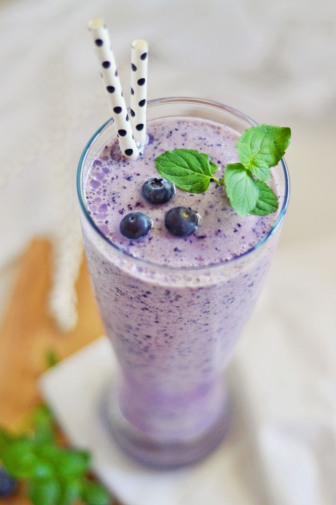

Description
Juicy blueberry smoothie for breakfast
Total: 15 mins; Prep:15 mins; Servings:1; Yield:1 smoothie
Ingredients
- 1 cup fresh blueberries
- ½ cup Greek yogurt
- ¼ cup orange juice
- ¼ teaspoon vanilla extract
- 1 pinch ground cinnamon, or to taste
Steps
- Blend blueberries, yogurt, orange juice, sugar, vanilla extract, and cinnamon together in a blender on low speed for 30 seconds; increase speed to high and blend until smooth, about 2 minutes. Add ice and blend on high until smooth, about 1 minute more.
Cook's notes
- If you want it less thick, add less ice. If you want it less cold, add less ice.
- I do not recommend using regular yogurt, because it will make the smoothie super watery.
- If you want it sweeter, try adding more orange juice first. If that doesn't do it, add another tablespoon of sugar or sweetener.
- If you don't like vanilla, don't add it!